-Wert hat wie
-Wert hat wie  . Dann berechnen Sie 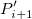 und 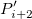. Die Werte 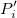, 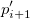 und 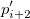 definieren eine Linie durch . Danach führen Sie die quadratische 1D-Interpolation horizontal durch, um den Wert bei auszuwerten.
. Dann berechnen Sie 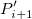 und 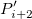. Die Werte 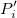, 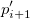 und 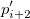 definieren eine Linie durch . Danach führen Sie die quadratische 1D-Interpolation horizontal durch, um den Wert bei auszuwerten.Mit der 2D-Interpolation/-Extrapolation können Sie entweder eine Gruppe von existierenden XYZ-Daten für einen gegebenen XY-Datensatz oder ein festgelegtes Matrixobjekt interpolieren/extrapolieren.
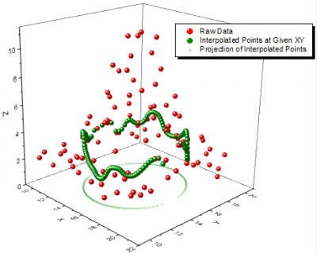
Das Hilfsmittel Z aus XY interpolieren erlaubt Ihnen, einen Satz von XY-Werten für die Interpolation/Extrapolation festzulegen, so dass zusätzliche Freiheit bei der 2D-Interpolation/-Extrapolation für nicht-äquidistant verteilte XY-Datensätze entsteht. Origin unterstützt 8 Interpolationsmethoden zum Interpolieren von Z aus XY: Nächster Nachbar, Random Kriging, Random Renka-Kline, Random Shepard, Random TPS, Spline, Dreieck, Gewichtetes Mittel.
Lesen Sie in der Dokumentation der X-Funktion interp2 Einzelheiten zu den Dialogbedienelemente des Hilfsmittels Z aus XY interpolieren.
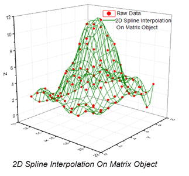
Die zweidimensionale Interpolation/Extrapolation kann für Daten durchgeführt werden, die in einer Origin-Matrix gespeichert sind. Origin unterstützt fünf Methoden für die Interpolation einer Matrix: Nächster Nachbar, Bilinear, Bikubisch, Spline, Biquadratisch. Sie können auch die Ausgabebereiche der Interpolation für X und Y festlegen.
| Neu berechnen |
Bedienelemente zur Neuberechnung der Analyseergebnisse
Weitere Informationen finden Sie unter Analyseergebnisse neu berechnen. |
|---|---|
| Eingabematrix |
Legt die Matrix fest, die die zu interpolierenden/extrapolierenden Daten enthält. Hilfe zum Festlegen von Bereichen finden Sie hier: Eingabedaten festlegen |
| Methode |
Legt die Interpolations-/Extrapolationsmethode fest.
|
| Anzahl der Spalten |
Legt die Spaltenanzahl der Ausgabematrix fest. |
| Anzahl der Zeilen |
Legt die Zeilenanzahl der Ausgabematrix fest. |
| Vorbehandlung von fehlenden Werten |
Legt die Methode fest, um fehlende Werte in der 2D-Interpolation vorzuverarbeiten.
|
| Koordinaten |
Legt die Koordinaten/XY-Abbildung der Ausgabematrix fest.
|
| Ausgabematrix |
Legt die Ausgabematrix für die interpolierten/extrapolierten Daten fest. |
Interpolation des nächsten Nachbarn:
Berechnet den interpolierten Wert mit Hilfe der am nächsten liegenden Gitterpunkte.
Polynomiale Interpolation:
Dieser Typ der Interpolation umfasst die Methoden Bilinear, Biquadratisch und Bikubische Faltung und Bikubische Lagrange, von denen alle ähnlich vorgehen. Beispielsweise können Sie, um den Wert bei 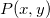 mit der biquadratischen Interpolationsmethode zu berechnen, zuerst die quadratische 1D-Interpolation vertikal durchführen, basierend auf den Datenpunkten 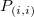, 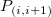, 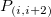, um 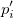 zu erzeugen, das den gleichen -Wert hat wie . Dann berechnen Sie 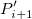 und 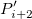. Die Werte 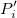, 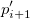 und 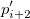 definieren eine Linie durch . Danach führen Sie die quadratische 1D-Interpolation horizontal durch, um den Wert bei auszuwerten.
Der Unterschied zwischen den Methoden Bilinear, Biquadratisch, Bikubische Faltung und Bikubische Lagrange ist, dass sie unterschiedliche Ordnungen der Polynomfunktionen verwenden. Das interpolierende Polynom der Ordnung n-1 durch n Punkte ist:
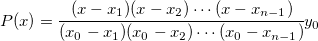 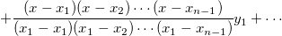 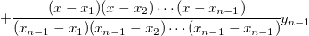
Spline-Interpolation:
Diese Methode berechnet Werte der bikubischen Spline 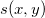 durch:
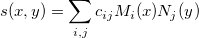
wobei 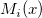 und 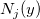 die normierten kubischen B-Splines bezeichnen und 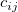 der Spline-Koeffizient ist.
Weitere Informationen zur 2D-Spline-Interpolation finden Sie in der Dokumentation zur NAG-Funktion e02dec.